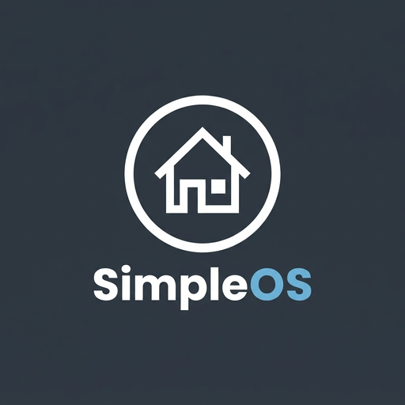
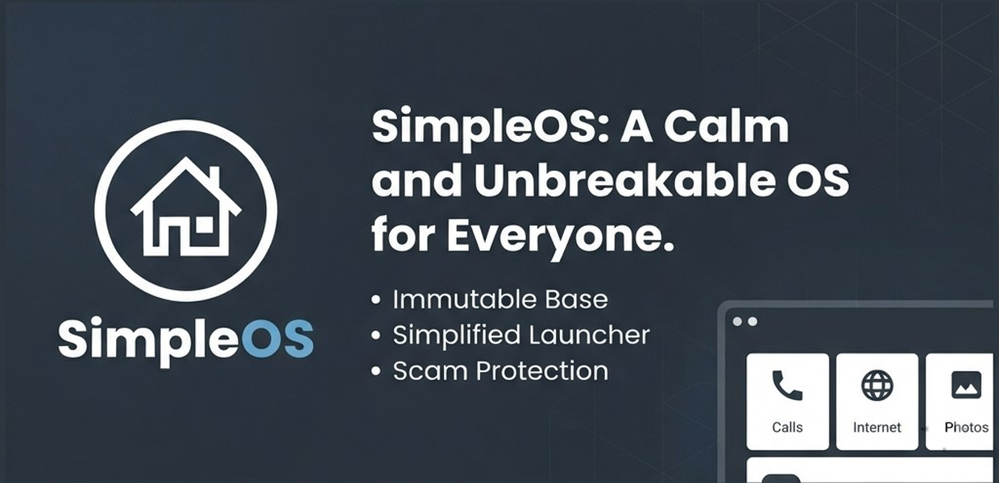

Hard to break by accident
The system is read-only and updates in one piece in the background. If an update misbehaves, the computer starts again with the version that worked before.

SimpleOS is free software for older adults. Big text, a few clear choices, and no pop-ups trying to trick anyone. If something goes wrong, a restart brings back the version that worked.
Free and open source. No account, no tracking.
This is the whole home screen. Have a look around.
Pick a tile to see what it does.

The system is read-only and updates in one piece in the background. If an update misbehaves, the computer starts again with the version that worked before.
Firefox comes set to HTTPS only, with uBlock Origin installed and locked in place. Sites cannot ask for notification or location access. The daily account has no admin rights, so a clever pop-up cannot install anything either.
Text starts at 18 pixels and gets larger with one click. The cursor is big, windows open full screen, and the launcher comes straight back if it ever closes.
Ask for Help opens RustDesk so someone you trust can see the screen and talk the person through a problem. Caregiver settings sit behind a PIN.
You do this part once. After that, hand over the computer.
Want the full walkthrough? Read the caregiver guide.
Download the latest release from GitHub, or build it yourself
with bash scripts/build-iso.sh. Both ways cost
nothing.
Use the flashing step in the build script. It checks the drive twice before writing anything. Read the warning and choose the right drive.
Start from the USB stick, install SimpleOS, then connect Wi-Fi and set up the printer in Caregiver Settings.
Open Caregiver Settings and pick at least four numbers. Write them down, because there is no way to reset a forgotten PIN yet.
Show them the six big buttons and how to get back home. Then let them try it while you are still in the room.
No. SimpleOS is free and open source. You can download a release or build it yourself with tools that cost nothing.
An ordinary x86 computer from roughly the last decade, with 4 GB of memory and 20 GB of free space. It needs to support UEFI. Older machines that feel slow with a modern desktop often work well here.
No telemetry, no accounts, no tracking. Firefox ships with telemetry turned off, and reminders stay in a file on the computer.
Updates download quietly in the background. They only take effect when the computer restarts, and the previous version stays available if something goes wrong.